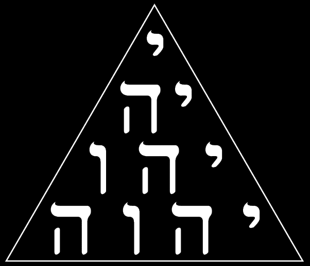
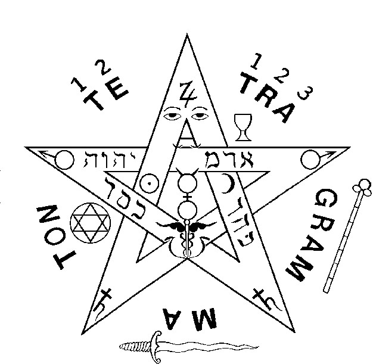
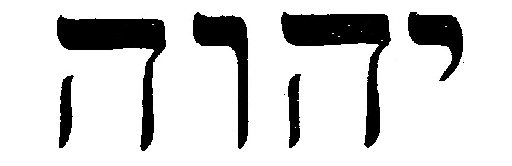
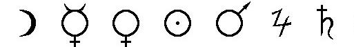
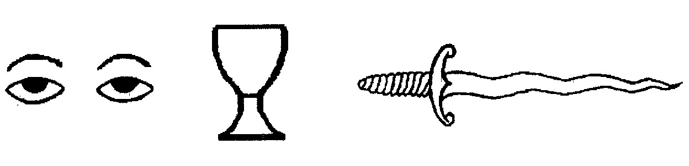
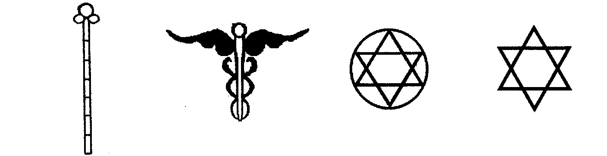

Tetragrammaton
Tetragrammaton: Johannes Trithemius (1462-1516)
Se inserirmos a letra ShIN (Sh) no meio do nome de IEVE, a palavra IEShVE (Jehoshua - Jesus) será formada.
O pentagrama representa o homem auto-realizado.
No ângulo superior encontramos os olhos do Pai, o espírito, o poder que dirige e ordena a todas as demais partes; nos braços, Marte é a força, nos pés, Saturno, onde se apoiam os mestres que graças a morte do ego, graças a morte dos defeitos psicológicos obtêm a perfeição, a mestria, por isso se conhece Saturno como o símbolo de magia ( magia = significa magistério, aquele que se conhece a si mesmo).
Somente o homem auto-realizado se levanta com as forças do Sol e da lua, que se encontram nas colunas do templo externamente representam a cruz sexual homem e mulher; e internamente, se olharmos bem, a sua correspondência é idá e pingalá, ou seja, as forças solares e lunares dentro do organismo.
Idá como força feminina é o Amor (Vênus) e Pingalá como força solar é Sabedoria (Mercúrio), por isso a Loja Branca é fundamentalmente Sabedoria e Amor.
Voltando ao símbolo do sol e da lua, que representam o masculino e o feminino (homem e mulher), vemos que no ponto médio das colunas nasce o caduceu de mercúrio, símbolo claro da ascensão ao longo da coluna vertebral da terceira força, que é resultante do ponto de equilíbrio das forças solares e lunares, ou seja, Kundalini. Esta terceira força começa nos órgãos sexuais, de onde inclusive provêm nossa vida.
Todos nascemos por meio da fornicação, mas não deveria ser assim, dado que é uma função sexual negativa. Ao contrário, a castidade deveria ser o método autêntico de concepção, praticando a transmutação integral ou arcano real. Desta maneira entendemos a passagem bíblica de Nicodemus, quando se refere ao que nasce da água(Água "da vida" na Bíblia significa o ens seminis, tanto no homem como na mulher.) e espírito, sendo este último a sabedoria do Pai, que é o conhecimento sagrado da Rosa e da Cruz.
Podemos observar que a figura a medida que ascende se estreita mais.Significa que faz mais difícil e mais íngreme o caminho a medida que vamos nos aproximando de Deus.
O Alfa (A) e Ômega (W) representam a energia cristo, que é o princípio e o fim de todas as coisas. Se observarmos o Ômega, este se encontra invertido porque é a vasilha de contenção do fogo sagrado, o cóccix, o atanor dos alquimistas (e o azeite que alimenta esse fogo provêm das gônadas sexuais que tanto no homem como na mulher tem a forma do fruto da oliveira bíblica - testículos e ovários-) , O SEXO é o produto, o amor, a rosa, a transmutação, a cristificação que como já dissemos nos dá a auto-realização. Portanto, o princípio e o fim de toda a sabedoria universal se encontra na ascensão desta energia na coluna vertebral.
Α Ω - Primeira e última letra do alfabeto grego - Principio e fim de todas as coisas.
1 2 - Binário Macho Fêmea - Origem da manifestação.
1 2 3 - Pai Mãe Filho - O Logos.
 - se lê da direita HE VAU HE IOD para esquerda significa: JEHOVA.
 - Lua(Gabriel) Mercúrio(Rafael) Vênus(anael) Sol(michael) Marte(camael) Júpiter(sachiel) Saturno(cassiel)
 - Os olhos do pai(Júpiter) - Cálice(o yoni feminino), elemento água - A espada flamígera(O falo masculino), elemento fogo.
 - Baculo ou bastão de mando( a coluna vertebral 7 graus), elemento Terra - Caduceu de Mercúrio( símbolo da transmutação) - Hexágono do Mago - Estrela de Salomão(domínio do espírito sobre a matéria), elemento ar.
O Pentagrama é um símbolo – um instrumento de meditação e de trabalho. Ele exprime, como ensinou Éliphas Lèvi (Paris, 8 de fevereiro de 1810 - Paris, 31 de maio de 1875), a dominação do Espírito sobre os elementos. A chave do seu significado é o número5 (CINCO), que está associado, minimamente, à letra hebraicaHE– a Quintessência dos Alquimistas (Adeptos), que, em verdade, é aPrima Materia.Ela é, segundo velhos manuscritos, a matriz da qual defluem os demais elementos: Fogo, Água, Ar e Terra.
O Pentagrama –Estrela Flamejante– representa a sabedoria dos magos. É o sinal do Verbum Dimissum.O Pentagrama está, obviamente, associado ao ser humano e ao Homem Ideal Unificado.
Nele estão inseridas as chaves do dois mundos: o visível e o invisível. Paracelso indicava este Pentáculo como mais hermético e mais poderoso do que o próprio Selo de Salomão.
No Pentagrama estão inscritas as proporções exatas do Athanor essencial à realização da Grande Obra.
O valor secreto reduzido do Pentagrama é o Hexagrama, que, por sua vez, oculta a Trindade. Esta Trindade, a seu turno, está velada no valor pleno da letra hebraica ALeF(1 + 30 + 80).
Por isso, como disse Hermes – o Três Vezes Grande –Assim como em cima, é embaixo.
No ângulo superior estão representados os Olhos Daquele Que Tudo Vê — O OLHO. É o OLHO da Consciência e simboliza o SOL.Nos Mistérios de Mitra o OLHO DIREITO era o símbolo do SOL.Marte – a força – está nos dois braços; e Saturno, nos pés, simbolizando a perfeição do Magistério.As letras Alfa e Ômega representam o princípio e o fim de todas as coisas, que, em verdade, nunca tiveram princípio, nem poderão ter fim.
Os algarismos 1 e 2 sobre a sílaba TE indicam o binário macho e fêmea – origem de qualquer manifestação. Os algarismos 1,2 e 3 sobre a sílaba TRA advertem para a existência da TrindadePai, Mãe e Filho – o LOGOS. IHVH representa a Eterna Presença; é oNOME... IEOE.No princípio era o ponto... O ponto se distendeu em curva... E formou um círculo... Em conformidade com as leis da atração e da repulsão formou-se o Triângulo de Três Lados Iguais –TETRACTYS.